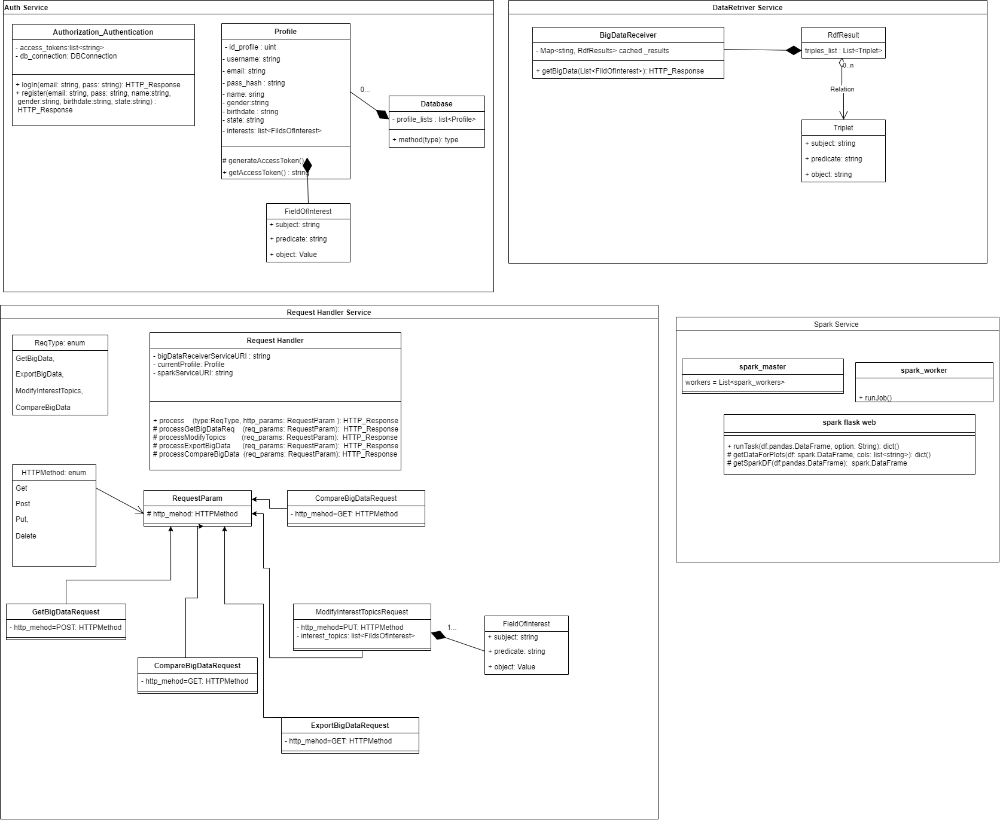
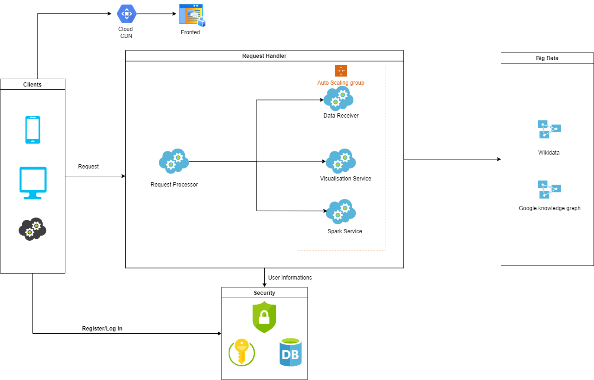

There are plenty of interesting resources provided by various knowledge Web systems like Wikidata. Develop a (micro-)service-based platform able to "intelligently" query, compare, visualize, share, summarize, etc. large (sets of) data/knowledge and additional resources according to user's needs and preferences – consider demographic information, skills, interests (playing games and skateboarding versus WebAssembly programming and fine arts), social status, entourage, etc.
Also, this Web system will suggest related information and/or knowledge according to each user profile and a set of given areas/topics of interest. Various computations could be performed by using existing big data techniques and tools. Expose minimum 2 real-life use-cases – for instance, discovering the fine arts, dance, or music (styles/artists/organizations) influences in the last Y years in a specific geographical area. Bonus: the use of natural user interactions.
2. Technologies
Frontend
The website is developed using the Flask framework on the server side and the Bootstrap 5 framework, Jinja 2 templating language, javascript, html5 and css for frontend design. Except the register and login pages, all other ages contains a base template of a navigation bar. All elements are styled with bootstrap and external sheet. For creation of multiple select dropdowns was used a external ajax script and for cascading dropdowns was created a javascript function.
The website contains next seven pages:
Login page
Register page
User profile page
Search page
Recommendation page
Demographics page
Games page
The interaction of user with these pages can be seen in Use Case diagram:
An user can log in on our website after registration and make a couple of actions; he can see his profile and modify his data on profile page, also cand add ore delete a topic of interest. There are many different functionalities of our website, the first one is to go on the search bar where an user can search any topic and will receive a visualisation of an rdf graph. Antoher action is to go to the recommendation page where the user can choose from a list different ingredients and based his choice he can receive a recommended receipt in two formats, as a Word Cloud visualisation or in a table. Another functionality that user can use is gempograpchis statistics page, where he can choose countries from a list and vizualise different statistics about life expectancy, democracy, fertility and HDI. And the last secnario is games page, where an user can see games statistics per countries, per continents and also to ocmpare between two countries.
Backend
For develpoment of this website we used Flask, a python micro web framework for backend. This contains numerous packages that helped in functionalities of out site, like flask_login for authetication, werkzeug for security and the easier communication with sqllite databse that was used to preccess users data. For data manipulation we used pandas dataframes, spark dataframes and for SPARQL queries SPARQLWrapper which is python wrapper around a SPARQL service to remotely execute queries. BiDaR offers many types of visualisations that were made with the help of different python modules like matplotlib, plotly, wordcloud and pygal_maps_world.
Our application is hosted on AWS in order to make it more responsiveness and to save our local space, more about this topic will be discussed in deployment section.
In the below diagram are presented a part of the classes and methods used in the backend part to make an idea of applications complexity.

3. Architecture
Microservices
Our application will have four microservices Data Retriver, Visualisation Service, Spark Service and Authentication Serviced which are controlled by the main orchestrator service named Request Processor.
The main flow of our architecture can be seen in the diagram below:

Request Processor Service this is the main service that process user actions like updateing profile info, adding or deleting topic of interest, visaulisez statistics or search a topic. Also, this service process the data received from data retriver service, like export, vizualize or compare.
Data Retriver Service construct all sparql queries for each endpoint and handle the data requested from sparql endpoints. This parse the rdf triples and send to the request processor service to show on pages. Main data source for our application is WikiData.
Authentication Service this service will be called when an user try to log in or register. Is used a token to ensure user indentity and make our website secure. On the server, token and session manage user information via a secret key, which are securely stored on the client.
Visualisation Service create all visualisation for statistics, these are stackplots, linesplots, pieplots, svg images, plotly charts, dataframes tables or Word Cloud Visualisation.
Spark Service was created for demographics functionality because the date is manipulated by spark dataframes and for our application to work independent and modular, all spark apache functionalities was included in this service.
Login, Register and Profile pages
For authenthication and register was created registrationService that use the package flask_login because is a easier way for session management and handles also user token creation. The data about users are stored in a sqllite database which contains two tables, user and interest that are modeled in two classes. User class contains all data about user, an id, name, email, hashed password with sha256 algorithm, gender, birthdate and state; and interest class contains user id (foreign key) and interest name. On these two models are made all operation about user; login, register, update and about interests like add and remove.
Search page
This functionality allow user to use Google Knowledge graph in order to gather the information that is required in search bar.
The awesome part is that the normal user, that is not aware of the advanced topics that are happening under the hood on Google servers, will describe the topic of interest in natural language, without using a sparql constructions. The result is displayed briefly in a visual rdf graph and he can further download in any rdf format like turtle, N3, svg and xml. This functionality is based in two services, search service which is responsible with the gathering of the data from the Google Knowledge graph and the visualisation service which will use the result from the search service and will processed into rdf graph.
Demographics page
The demographics involves working with Spark DataFrames and doing a more advanced query. When it comes to demographics, as a user, you got 2 options: the “population, life expectancy, HDI” specific method and the “fertility, democracy index, life expectancy” alternative. The first one allows you to do a stack-plot with the population evolution of some countries through time, a line-plot with the life expectancy through time in the selected countries and a pie-plot/ bar-chart of the HDI distribution. The query for all of these plots is the same. We are interested in finding the country labels and their associated populations, life expectancies, HDIs and datetimes of the censuses. Comparing different statistics requires me to be consistent, hence there is a filter only for those rows that have censuses taken on the same year for each different country. Moreover, there can be also made an additional filtering and focus only on the censuses that took place in the same MONTH too. After building the query, iscalled the SPARQL endpoint of WikiData and received a result as a JSON that is converted into a pandas DataFrame. It looks something like this (only the first 5 rows are printed to give you a general understanding):
Now can easily be converted to a Spark DataFrame. This is done because we might receive a lot of rows from the SELECT statement and running computations on a single CPU on a high sized pandas DataFrame is not ideal. Therefore, we wanted a distributed approach. WikiData gave more meta-data than were expected by even specifying the datatypes/types of attributes, their language and some URIs. This was very helpful since we needed them when building the Spark DataFrame schema definition. Another pre-processing step was to rename the columns because those “.value” strings at the end of attributes are not needed. Also, we paid attention to the xsd datatypes which must be encoded to proper Python datatypes. The end result was this (only a few rows are printed for simplicity):
The next natural step was to group all of these statistics by country. In plain code, Spark is very convenient for this kind of tasks, by providing the necessary operations with ease:
group_by_country_df = spark_df.select(relevant_columns).distinct().rdd.map(lambda row: list(row.asDict().values())).map(lambda line: (line[0], tuple(line[1:]))).groupByKey()
Having already computed the unique (month, year) combinations present in dataset, iterate through each group to see which combo is present in all of them.
In the end, were kept only the consistent statistics, as mentioned before, and were “feeded” them to one of the 3 plots. It’s worth mentioning that the HDI values are not categorical and pie plots or bar charts only work on categorical data. Therefore, wehad to force some categories. Was calculated the mean HDI for each country and decided to label them as “low”, “medium”, “high” or “very high” according to how big the mean was.
On the second method of the demographics service, we focus on the fertility, democracy and life expectancy of some countries. Here we were interested in some aggregation functions such as min, max or avg. Besides this, the user can also specify some conditions regarding these aggregations. His conditions are going to be enforced in a HAVING clause. The main target was to use the “group by” statement in a SPARQL query and process the results accordingly. . As mention, we received help on the query because I was getting a “time limit exceeded” error. A member of the WikiData community helped with an optimization that involves using a “WITH” statement that selects the countries and does the filtering before obtaining the other statistics. The output is a matrix visualization with the aggregated values for each country. It’s important to notice that only the countries which respect the imposed restrictions are taken into consideration. These are some of the plots:
Games page
The games service is probably the best good looking among all. On the first service method, the goal was to find the number of games produced by each country in the world. The user is given an option to exclude some countries and even some continents (meaning all the countries of those continents will be left out). The main query involves using a subquery with relevant columns for the entire service on top of which were selected only the necessary things for the current method. It’s worth noticing that we use MINUS and UNION operations to exclude the union of all the countries and continents excluded. After the query results was received, the text processing step was names of the countries and continents. There were a lot of of missunderstandings regarding spelling, such as “Antarctica” vs “Anctartica” etc. In the end, were ploted the results on a world map with the help of plotly. You can hover on each country and see a dot that is bigger or smaller, according to the number of games produced in that country. Also, each dot has a color that corresponds to the continent of the country. It should look something like this:
As you can see, France is mistakenly colored purple instead of green. This is due to the fact that France has islands on different continents so you could theoretically consider it a country from Antarctica too!
The second service method does exactly the same thing as the first one, but it scales up to continent level. In other words, it will show the number of games produced on each continent with the possibility of excluding some continents or not taking some countries into consideration when counting. The query just builds on top of the previous one and does another aggregation. You can once again hover on each continent and view the results. In the following picture you can see that Asia and Africa have been excluded from the results!
Recommender page
This is a basic service where the user has 2 options to chose from. He can either see a wordcloud with the ingredients of all the dishes present on WikiData (the sizes of the ingredients in the wordcloud are proportional to how often they appear in the dishes) or get some recommendations of further ingredients that go well with his options. The recommendation system is based on association rules made between ingredients by using the Apriori algorithm. This model returns a pandas DataFrame where the “antecedents” column is represented by the user selected ingredients and the “conequents” column contains the recommendations. You should look at the “confidence” score to attest how reliable a recommendation is. Moreover, the last column contains the receipes that have all the user specified ingredients. The SPARQL query for this is very minimalistic and is searching only for the available dishes and their ingredients. Above are presented some concrete visualisations of the 2 metods in the service:
Deployment
The main website is deployed in AWS Elastic Beanstalk that automatically handles the deployment, from capacity provisioning, load balancing, auto-scaling to application health monitoring. At the same time, we have full control over the AWS resources powering our application and we can access the underlying resources at any time. The code is automatically deployed on AWS using AWS Code Pipeline which will be triggered automatically when a new commit is made on github.
For each services deployment we used docker containers in order to ensure that dependencies are meet. Those docker containers are now exposed in AWS EC2 instances.
REST API
The REST API developed for BiDaR can be used by registered users, if somebody don't have an account they can make a post request to register endpoint to create one and after they need to login. After login an user have various options like etting, adding or deleting topics of interest and also modify their account detalis. This API offers all the functionalities from the main website, you can search a topic an recevie the svg graph, or see all statistics about demographics, fetility, life expectancy, or you can comapre games from two coutries and see the distribution per continent and also you can get an recepit recommendation from your ingredients list, the api contains all necessary endpoints and different type of requests can be made, like GET, POST, PUT or DELETE.
Our endpoints with the methods and the paramaters needed for usage can be seen in image above and more explicitly in our OpenApi file.
Linked data principles
Linked Data is a set of recommended practices for publishing structured data on the Web.
Data should first be made available in a standard format that can be reached and processed by Semantic Web tools and in this way the information is easily accessible.
This is achieved by respecting the four principles of Linked Data:
Use Uniform Resource Identifiers (URIs) as names for things
Use HTTP URIs so that people can look up those names
Provide information using Semantic Web technologies such as RDF, OWL, SPARQL etc.
Include links to other URIs to make other data discoverable
BiDaR will use of a few of these principles in the following manners:
URIs will be properly used to name the pages which facilitates the search for named data
The data will be modeled using the RDF vocabulary.
Entries on suggetion page will be links that redirect to their sources.